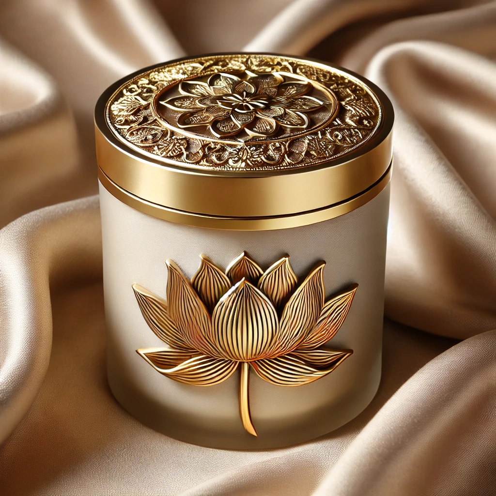
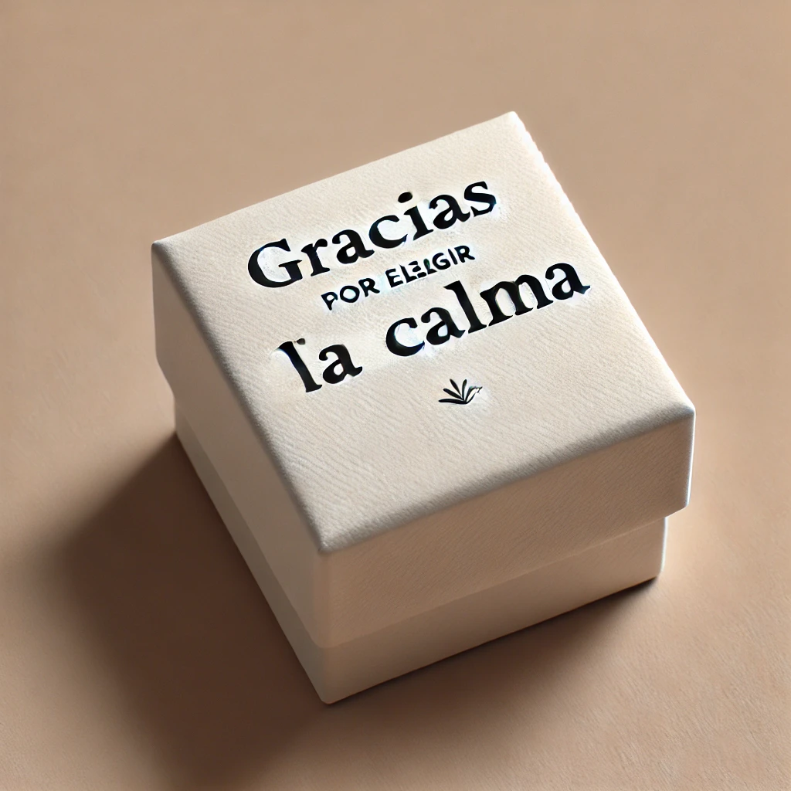

¿Qué incluye este pack?
-

Vela Aromática: Luz y Serenidad en Cada Momento
Transforma tu espacio con esta exquisita vela aromática. Su elegante vaso en tono beige, adornado con un logotipo dorado en forma de flor de loto, simboliza pureza y tranquilidad. Encenderla es iniciar un momento de paz: su cálida luz y aroma crean un ambiente perfecto para la meditación, la relajación o simplemente disfrutar de tu momento Zen. Los 100 primeros pedidos reciben de regalo en el pack una minivela extra.
-
Amuleto Dorado con Espejo Interior.
Este amuleto, de forma circular y exquisitamente diseñado en dorado, incorpora los valores del Zen en cada uno de sus detalles. Su delicado grabado en forma de flor de loto simboliza el florecimiento espiritual, la pureza y la superación de las adversidades. En su interior, un espejo cuidadosamente pulido refleja no solo el mundo exterior, sino también el camino hacia la introspección y el autoconocimiento.
-
Piedra energetica alargada
Cuarzo rosado natural con acabados pulidos.El cuarzo rosado, es un símbolo de amor, paz y equilibrio emocional. Su forma estilizada permite que fluya la energía de manera natural, siendo ideal para meditación, rituales de autocuidado o como un elegante elemento decorativo en tu espacio Zen.
-
Pulsera Dorada con Piedra Rosada: Elegancia y Energía en Armonía
Un accesorio que inspira: La combinación del dorado con el tono suave de la piedra central simboliza la unión perfecta entre la energía positiva y la elegancia cotidiana. Ideal para complementar cualquier atuendo, esta pulsera también actúa como un recordatorio constante de calma y conexión interior.
-

Caja de Aceites Esenciales: Elixir de Calma
Un detalle único que refleja gratitud y serenidad. En su elegante diseño, esta caja contiene una delicada botella de aceites esenciales, cuidadosamente seleccionados para enriquecer tus momentos de paz. Un ritual de cuidado personal: Cada gota del aceite esencial es una invitación a reconectar contigo mismo, transformando tu espacio en un refugio de tranquilidad.